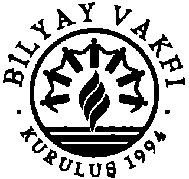

Ruhların Kaderi adlı kitabınızın ikinci bölümünde sevdiklerimizin ruhlarının bizi rahatlatmak için geri döndüklerini öğrenmek çok etkileyiciydi.
Susan, Sacramento, CA
Dr. Newton'un öğretilerinin bir kitapta daha yayınlanması beni çok
heyecanlandırdı. Bu kitapta, ilk kitabında öğrendiklerimizle ilgili
çok daha büyük bir anlayış sunuyor.
Laura, Denver, CO
Ruhların Kaderi, Ruhların Yolculuğun dan sonra daha fazla şey öğrenmek isteyen benim gibi birçok kişiyi çok heyecanlandırıyor.
/erry, Albany, NY
Çalışmanızı okuyana kadar öte aleme ilişkin zihnimde beliren anılarımı hiç anlamamıştım.
Dave, Atlanta, GA
Ruhsallık hakkındaki yazılannızın niteliği ve kapsamı çok derin, yine de oldukça karmaşık fikirleri çok basit bir şekilde aktarabiliyorsunuz. Verdiğiniz ilham için bütün kalbimle teşekkür ederim.
Doris, Riversid e, CA
Bir düzen ve sevgi yeri olarak ruh dünyasının yapısı hakkındaki
analiziniz çok ilham verici.
Tracy, /asper, IN
Kitabınız beni çok rahatlahyör ve o büyük bilinmeyene dair korkumun azalmasına yardımcı oluyor.
Rene, Paris, Fransa
Bu çalışmalarınızdan çıkan aydınlahcı mesaja değer biçilemez.
Ho ltz, Bonn, Almanya
Çoğu kez büyük bir yalnızlık ve bu hayata ait değilmişim duygusu
yaşamışımdır. Siz benim bu duygularımın nereden kaynaklandığını
ve gerçekte kim olduğumu görmemi sağladınız.
Rachel, Lond ra, İngiltere
1
Mil'hal'I Duff Newton, Psikolojik Danışmanlık alanında doktora
yapmıştır, diplomalı Master İpnoterapist ve Amerikan Danışmanlık
Birliğinin üyesidir. Los Angeles'ta mesleğini özel hasta kabulleriyle
aktif olarak sürdürmesinin yanı sıra, yüksek öğretim kurumlanrun
kadrolarında eğitmen olarak da görev alınışhr. Dr. Newton ipnoz
deneklerini etkin bir şekilde geçmiş hayat anılarının ötesinde daha
anlamlı bir ruhsal deneyime götürebilmek için kendi regresyon (geriye götürme) tekniklerini geliştirmiştir. Yazar ilk olarak on dile çevrilen ve çok satan kitaplar listesine giren Ruhların Yolculuğuıdlı kitabıyla, paylaşhğı ruh dünyasındaki yaşantınuzın gizlerine ışık tutan çalışmalarıyla bir öncü olarak kabul edilmektedir. Sayısız radyo ve TV talk show'larına ve New Age organizasyonlarına konuşmacı
olarak kahlan Dr. Newton, regresyon terapisti olarak uluslararası
bir üne sahiptir. 1998 yılında zihin, beden ve ruh arasında köprü kuran çalışmalarından ��layı Ulusal Transpersonel İpnoterapistler Ulusal Birliği'nin "En üzgün Katkı" ödülünü kazanmıştır. Bu ödüle layık görülmesinin nedeni, uzun yıllarını verdiği klinik ruhsal anılar araşhrmalan ve ölüm sonrası hayatın kozmolojisi hakkındaki keşifleridir. 2001 yılında, Ruhların Kaderiıdlı bu kitabıyla her yıl verilen Bağımsız Yayımcılar Kitap Ödülü'nü kazanmışhr. Aynı zamanda bir tarihçi ve amatör bir astronom olan Dr. Newton Dünya'yı dolaşan bir gezgindir. Eşi Peggy ile birlikte Kuzey California' da Sierra Nevada Dağlarında yaşamaktadır.
Yazara Ulaşmak İçin
Yazarla temasa geçmek ya da bu kitap hakkında daha fazla bilgi almak isterseniz, mektuplarınızı Llewellyn Worldwide'a gönderebilirsiniz; mektuplarınız kendisine iletilecektir. Hem yazar hem de yayımcı bu kitapla ilgili düşüncelerinizi, ondan öğrendiklerinizi ve size nasıl yardımcı olduğunu duymaktan memnuniyet duyacakhr.
Llewellyn Worldwide yazara gönderilen her mektubun yanıtlanacağına dair garanti veremez, ama bütün mektuplan ileteceğini temin eder. Mektuplarınızı şu adrese yazabilirsiniz: Michael Newton, Ph.D.
% Llewellyn Worldwide
2143 Wooddale Drive
Woodbury, MN 55125-2989
2
Dr. Michael Newton
RUHLARIN KADERİ
HAYATLAR ARASINDAKİ HAYAT HAKKINDA
YENİ V AKA İNCELEMELERİ
Çeviren
Sezer Soner
Ruh ve Madde Yayınları
3

/Jestiny ofSouls
( .'ııpyright © 2000 Michae/ Newton, Ph.D.
Bu kitabın yayın hakkı İnsanlığı Birleştiren Bilgiyi Yayma (BİLYAY) Vakfının
bir kuruluşu olan Ruh ve Madde Yayıncılık ve Sağlık Hizmetleri A.Ş. 'ye aittir.
Ruh ve Madde Yayıncılık ve Sağlık Hizmetleri A.Ş. 'den yazılı izin alınmadan
hiçbir alıntı yapılamaz.©
İstanbul, Ekim 2012
Kapak: Hakan Esmergül
lSBN: 978-975-6377-50-5
Yayıncı Sertifika No: 11225
Yayın
Ruh ve Madde Yayıncılık ve Sağlık Hizmetleri A.Ş.
Hasnun Galip Sok. Pembe Çıkmazı No: 419
3443 Beyoğlu/İSTANBUL
Tel: (212) 243 18 14-249 34 45
Faks: (212) 252 07 18
www.ruhvemadde.com
info@ruhvemadde.com
Baskı
Boraks Matbaacılık ve Ambalaj Sanayi
Ticaret ve Pazarlama Ltd. Şti.
Maltepe Malı. Çiftehavuzlar Cad.
ı\yvalıdcre Yolu No: 3/3-1 34160
Zeytinburnu/İSTANBUL
Tel: (212) 567 64 26 - 576 78 62
l'ııks: (212) 567 64 26
www.lıorııks.com.tr
ı ıı it ı111ılıoruks.com. tr